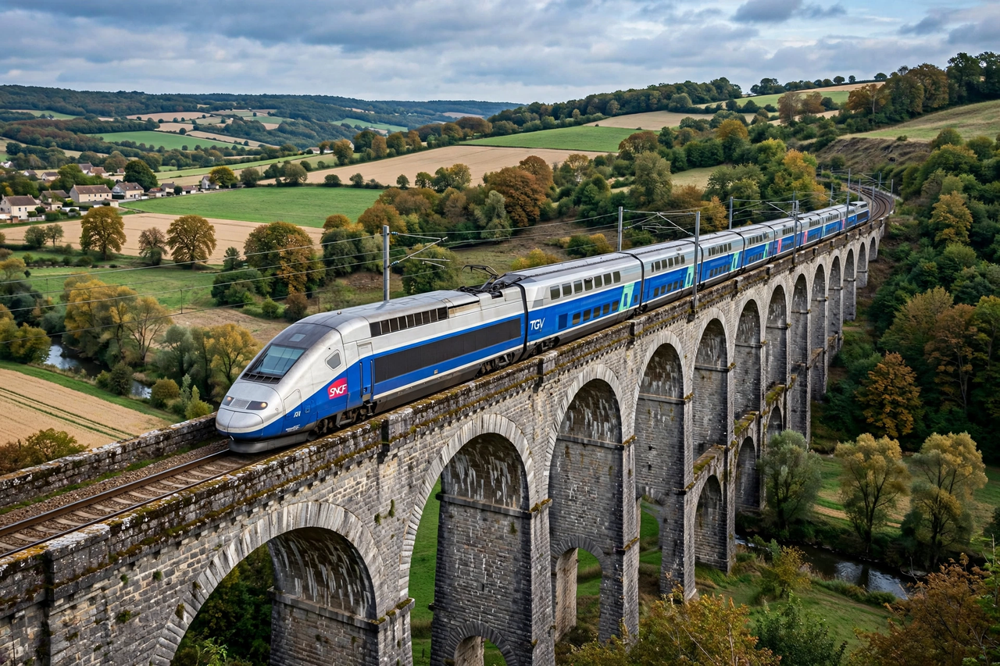

Rail transport in France
| Rail transport in France | |
|---|---|
| National operator | SNCF |
| Infrastructure | SNCF Réseau |
| Network length | ~27,600 km |
| High-speed | TGV / LGV network from 1981 |
Rail transport in France is centred on the state-owned SNCF (Société nationale des chemins de fer français) and its high-speed TGV (Train à Grande Vitesse) network, one of the most extensive in the world. The French rail network is organised around Paris, with radials linking the capital to regional cities.

History
France's first steam railway opened in 1827 between Saint-Étienne and Andrézieux, primarily for coal. The network consolidated under the French state in 1938 with the creation of SNCF. France pioneered high-speed rail with the opening of the LGV Sud-Est in 1981; the TGV set a world rail speed record of 574.8 km/h in 2007.
High-speed network
- LGV Sud-Est / Atlantique / Nord / Est / Méditerranée / Rhin-Rhône — the main high-speed corridors
- Channel Tunnel (Eurotunnel) — linking France with Britain since 1994